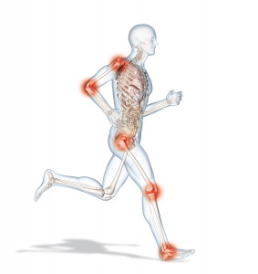

Chirurgie Digestive
La chirurgie digestive concerne les interventions réalisées sur l'appareil digestif ciblant l'œsophage, l'estomac, le duodénum, l'intestin grêle, le côlon et le rectum. Le chirurgien digestif réalise aussi des interventions sur les voies biliaires et la vésicule, le foie, le pancréas, la rate et sur la paroi abdominale, telle que la chirurgie de la hernie inguinale, expliquant l'intitulé chirurgie viscérale et digestive, le plus fréquemment utilisé en France. La chirurgie hépatique lourde, et les transplantations, représente une sous-spécialité, essentiellement exercée dans les centres hospitalo-universitaires. De même, la chirurgie pancréatique, œsophagienne, et rectale sous-péritonéale tend à se spécialiser et à être exercée dans des centres experts.
Chirurgie orthop´dique et traumatologique
|
Partie de la chirurgie qui traite les déformations des os, des articulations, des muscles et des tendons et répare ceux qui sont abîmés au cours d'un accident (traumatisme). Chirurgie restauratrice osseuse, articulaire, ligamentaire et musculo-tendineuse lors des traumatismes ou à la suite de maladies de l'appareil locomoteur. Chirurgie prothétique de la hanche, du genou et autres articulations. Chirurgie arthroscopique (vidéo-assistée) en particulier du genou. Chirurgie réparatrice des fractures ostéo-articulaires. |
 |
|---|---|
Neurochirurgie
La neurochirurgie est la discipline chirurgicale qui est spécialisée dans la chirurgie du système nerveux central et du système nerveux périphérique. Le chirurgien spécialisé pratiquant la neurochirurgie s'appelle le neurochirurgien.
Pathologies concern ées
Parmi les états traités par les neurochirurgiens :
|
|
|
|---|
Chirurgie ambulatoire
Définition
La chirurgie ambulatoire est un mode de prise en charge permettant de raccourcir à une seule journée votre hospitalisation pour une intervention chirurgicale. Vous rentrez donc le matin pour être opéré le jour même et ressortir le soir. La durée de séjour à l'hôpital est de quelques heures à moins de 12 heures. Cette modalité de chirurgie est pratiquée avec l’accord du patient et sous certaines conditions, tenant compte à la fois du type d’intervention chirurgicale réalisée, des conditions de vie du patient (présence d’un accompagnant) et de l’organisation des services de chirurgie.
Opérations concernées
Les interventions les plus courantes sont l’ablation de la cataracte, les extractions dentaires (dents de sagesse), la cure de varices, les arthroscopies, la cure des hernies. Des interventions de plus en plus complexes sont aussi réalisées en ambulatoire : l’ablation de la vésicule biliaire, certaines interventions gynécologiques, le traitement de ligament du genou, de pathologie de la main, de l’épaule… Et certains établissements de soins commencent à pratiquer des interventions plus audacieuses encore, comme l’ablation du côlon ou du lobe du poumon pour cancer, l’appendicectomie, la pose d’une prothèse de genou et/ou de hanche, d’un by-pass pour les personnes obèses…
En cancérologie, la chirurgie ambulatoire est déjà développée pour certains organes, et notamment pour la chirurgie conservatrice du sein. Dans les centres de lutte contre le cancer, 17 % des patientes opérées pour un cancer du sein en ont bénéficié en 2012.